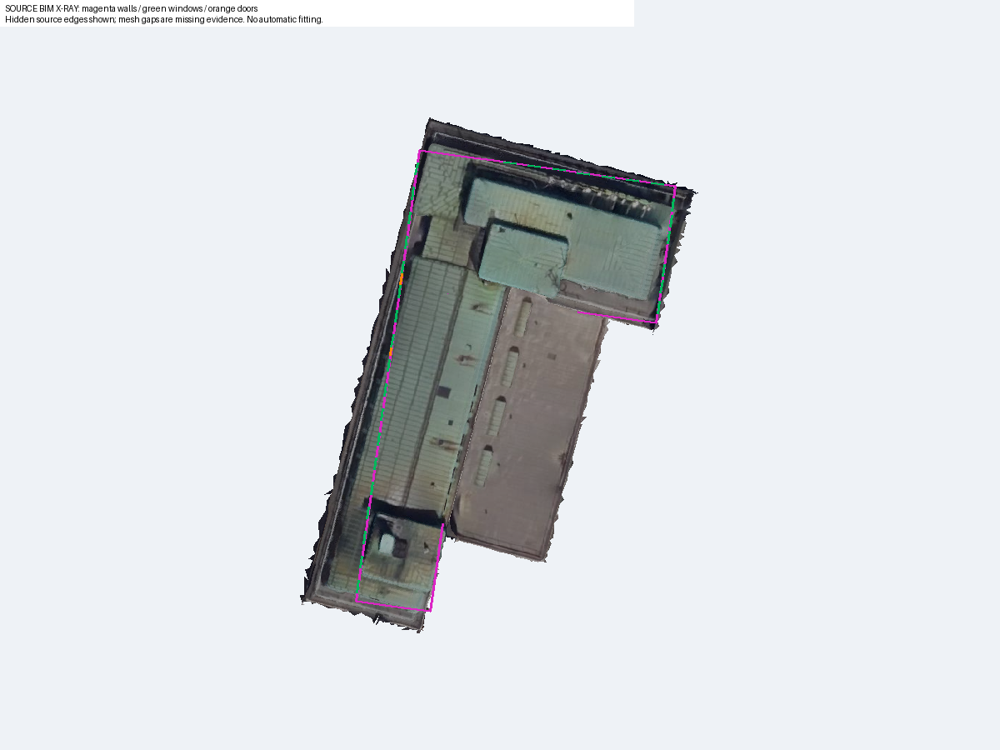
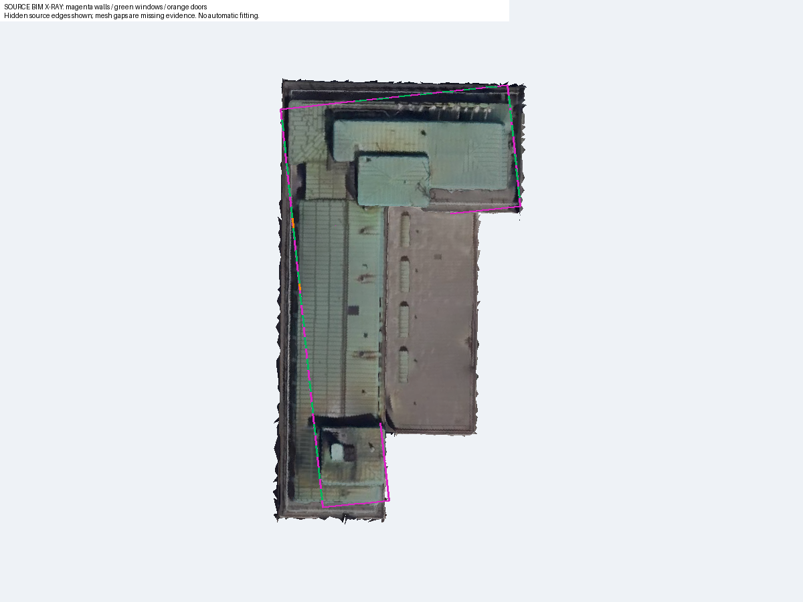
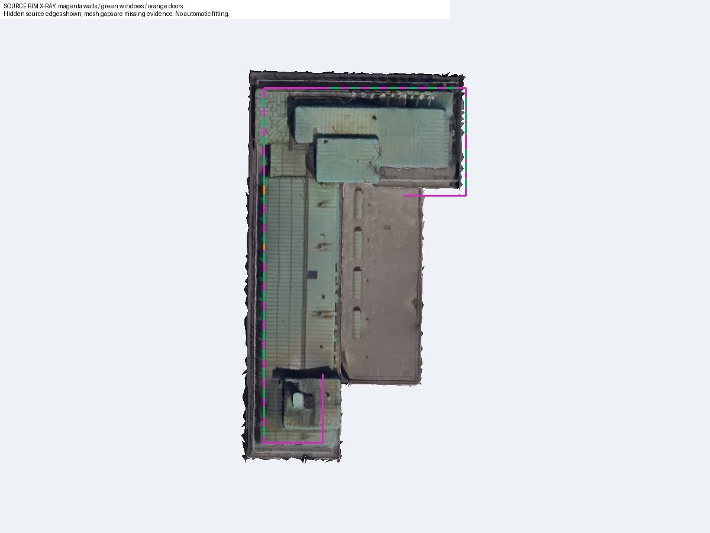
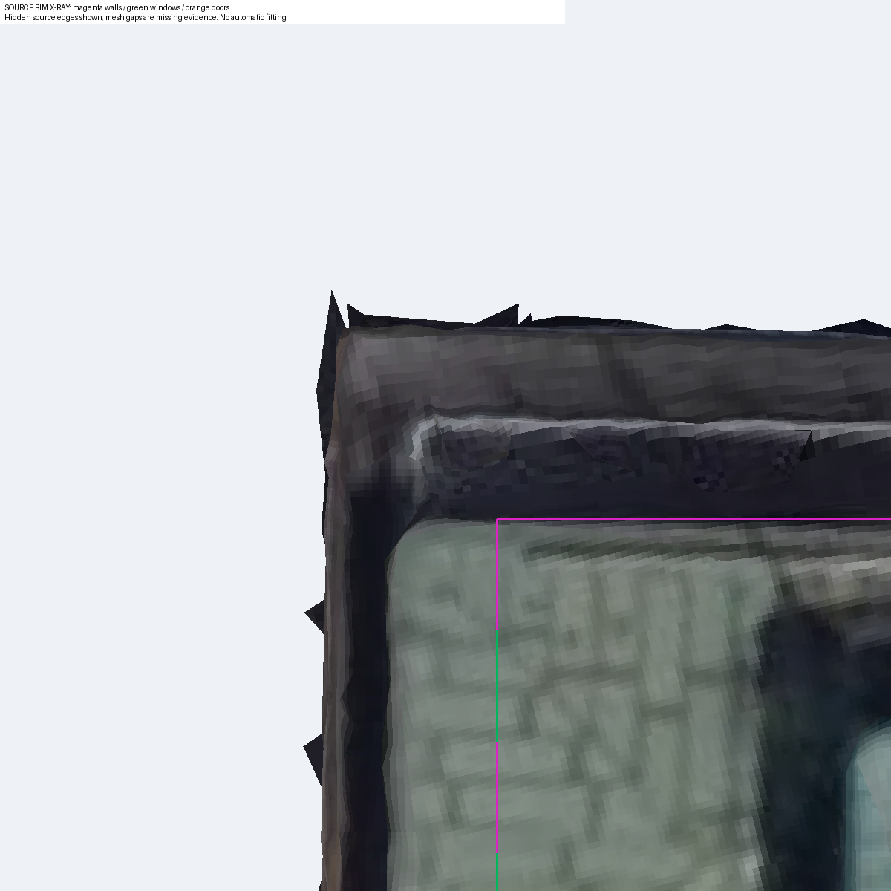
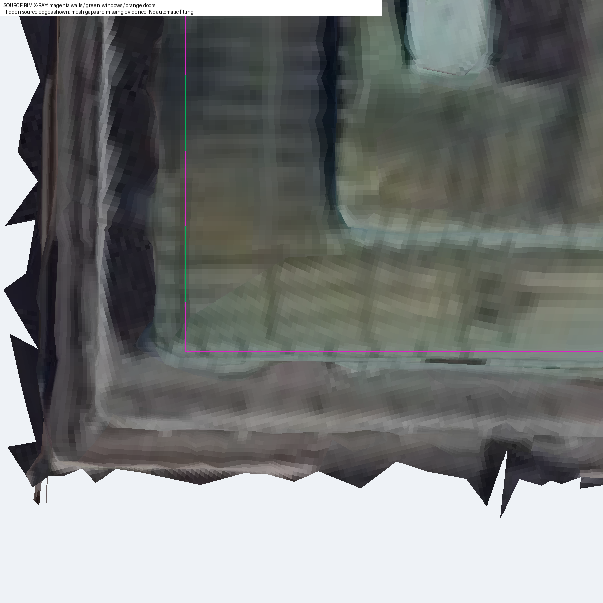
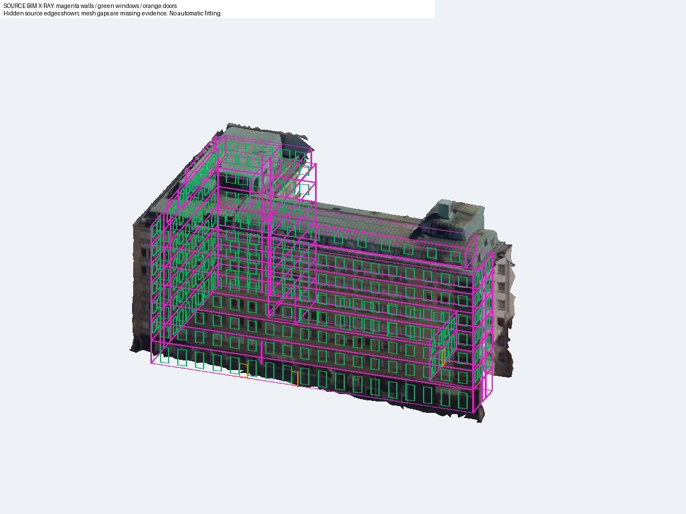
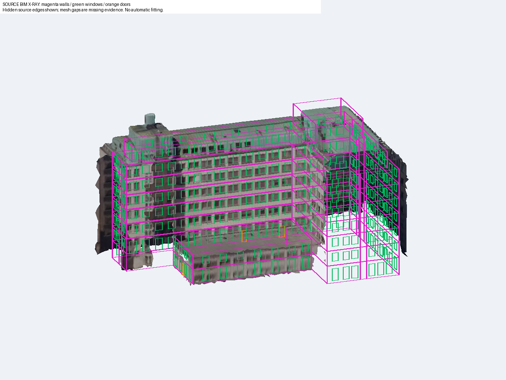

overlay_001 · candidate_01 / L1
旋转 8° · 平移 [0.0, 0.0, 0.0] m

overlay_002 · candidate_01 / L1
旋转 8° · 平移 [0.0, 0.0, 0.0] m

overlay_003 · candidate_02 / L1
旋转 14° · 平移 [0.0, 0.0, 0.0] m

overlay_004 · candidate_02 / L1
旋转 14° · 平移 [0.0, 0.0, 0.0] m

overlay_005 · candidate_02 / L1
旋转 14° · 平移 [0.0, 0.0, 0.0] m

overlay_006 · candidate_02 / None
旋转 14° · 平移 [0.0, 0.0, 0.0] m

overlay_007 · candidate_02 / None
旋转 14° · 平移 [0.0, 0.0, 0.0] m
